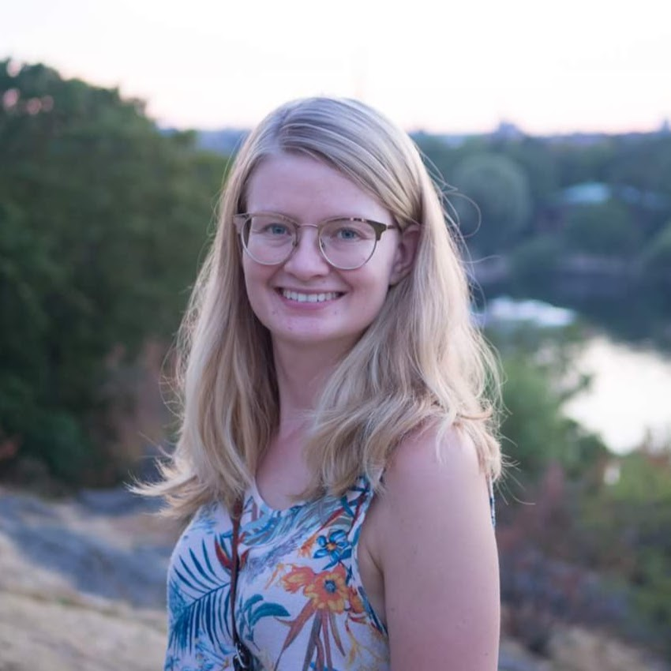

Sarah Dean
sarahdean AT eecs DOT berkeley DOT edu · CV · faculty app materials
 · job talk
I just completed my PhD in EECS at UC Berkeley.
I will be in Seattle, WA for a couple of months to work with Jamie Morgenstern at UW this fall.
I am joining Cornell CS as an Assistant Professor in January 2022—if you are a student interested in working with me, feel free to reach out!
I study the interplay between optimization, machine learning, and dynamics in real-world systems. My research focuses on understanding the fundamentals of data-driven methods for control and decision-making, inspired by applications ranging from robotics to recommendation systems.
You can learn more by reading my dissertation or watching my dissertation talk.
At UC Berkeley, I was
advised by Ben Recht and affiliated with BAIR and BCCI. I was funded by a Berkeley fellowship and the NSF graduate research fellowship.*
I am a founding member of Graduates for Engaged and Extended Scholarship in computing and Engineering (GEESE).
I interned with Canopy in Boston, MA during Summer 2019.
I graduated from the University of Pennsylvania in 2016, where I studied electrical engineering and math and was fortunate to work with professors Daniel Lee and Daniel Koditschek.
During my time at Penn, I worked as a teaching assistant for several math and engineering courses and became engaged in service learning through my involvement with the West Philadelphia Tutoring Project at Civic House.
I grew up in upstate New York, and when I'm not working or reading, I like to spend time pretending to be athletic outside: hiking, biking, swimming, sailing, roller skating, and cross country skiing.
Research
Towards the goal of developing principled data-driven methods for control and decision-making,
I study the interplay between optimization, machine learning, and dynamics in real-world systems.
My work is enriched by collaborative projects in robotics, recommendation systems, computational imaging, and developmental economics.
The highlights can be broadly categorized into two thrusts:
Guaranteeing safety in feedback control.
Modern autonomous systems face challenges well-suited to a combination of feedback control
and machine learning. To explore the risks and trade-offs that arise in such settings,
I've studied the sample complexity of classical optimal control problems, developed a method for safely learning in the presence of constraints, and derived guarantees for
perception-based control.
Ensuring values in social-digital systems.
While many machine learning systems that interact with people have a temporal feedback component, it can be difficult to explicitly plan around these dynamical interactions.
Towards designing systems that respect important human values,
I have studied the delayed impact of fairness in consequential decision-making and developed a way to quantify the reachability of information within recommender systems.
Teaching
At Berkeley, I worked on course development for a new EECS Anti-Racism and Social Justice course (and gave a guest lecture on Bias in Algorithms) and as a Graduate Student Instructor for Statistical Learning Theory (EECS 281) and Introduction to Machine Learning (EECS 189/289).
At Penn, I worked as a teaching assistant for the lab-based Digital Audio Basics (ESE 150) and Introduction to Electrical and Systems Engineering (ESE 111). I also worked as a teaching assistant for Integral Calculus (Math 104) and Multivariate Calculus (Math 114).
Publications
For the most up to date list of my publications and preprints, see my Google Scholar profile.
If you are interested in code for a paper without a github link, feel free to send me an email.
Towards Robust Data-Driven Control Synthesis for Nonlinear Systems with Actuation Uncertainty [arXiv]
Andrew J. Taylor*, Victor D. Dorobantu*, Sarah Dean*, Benjamin Recht, Yisong Yue, and Aaron D. Ames
to appear at CDC 2021.
Quantifying Availability and Discovery in Recommender Systems via Stochastic Reachability
[arXiv]
Mihaela Curmei*, Sarah Dean*, and Benjamin Recht
presented at ICML 2021,
short version presented at Participatory Approaches to Machine Learning workshop at ICML 2020.
Certainty Equivalent Perception-Based Control
[arXiv]
[github]
[talk]
[slides]
Sarah Dean and Benjamin Recht
oral presentation at L4DC 2021.
Axes for Sociotechnical Inquiry in AI Research [arXiv] [IEEE]
Sarah Dean, Thomas Krendl Gilbert, Nathan Lambert, and Tom Zick
published in IEEE Transactions on Technology and Society (2021).
AI Development for the Public Interest: From Abstraction Traps to Sociotechnical Risks [arXiv]
McKane Andrus, Sarah Dean, Thomas Krendl Gilbert, Nathan Lambert, and Tom Zick
presented at IEEE ISTAS 2020.
Do Offline Metrics Predict Online Performance in Recommender Systems?
[arXiv]
[github]
Karl Krauth, Sarah Dean*, Alex Zhao*, Wenshuo Guo*, Mihaela Curmei*, Benjamin Recht, Michael I. Jordan
short version presented at the Workshop on Consequential Decisions in Dynamic Environments at NeurIPS 2020.
Guaranteeing Safety of Learned Perception Modules via Measurement-Robust Control Barrier Functions
[arXiv]
[video]
[talk]
[slides]
[github]
Sarah Dean, Andrew Taylor, Ryan Cosner, Benjamin Recht, and Aaron Ames
Best Paper Finalist at CoRL 2020.
Balancing Competing Objectives with Noisy Data: Score-Based Classifiers for Welfare-Aware Machine Learning
[arXiv]
[github]
Esther Rolf, Max Simchowitz, Sarah Dean, Lydia T Liu, Daniel Björkegren, Moritz Hardt, and Joshua Blumenstock
presented at ICML 2020,
short version awarded Best Paper at NeurIPS Joint Workshop on AI for Social Good 2019.
Robust Guarantees for Perception-Based Control
[arXiv]
[slides]
[talk]
[poster]
[github]
Sarah Dean, Nikolai Matni, Benjamin Recht, and Vickie Ye
presented at L4DC 2020.
Recommendations and User Agency: The Reachability of Collaboratively-Filtered Information
[arXiv] [talk]
Sarah Dean, Sarah Rich, and Benjamin Recht
presented at FAccT 2020.
On the Sample Complexity of the Linear Quadratic Regulator [arXiv] [FoCM]
[talk]
Sarah Dean, Horia Mania, Nikolai Matni, Benjamin Recht, and Stephen Tu
published in Foundations of Computational Mathematics (2019).
High-throughput fluorescence microscopy using multi-frame motion deblurring [BOE]
[github]
Zachary Phillips, Sarah Dean, Laura Waller, and Benjamin Recht
published in Biomedical Optics Express 11 (2020),
extended abstract awarded Best Student Paper in Imaging Systems at OSA Congress 2018.
Safely Learning to Control the Constrained Linear Quadratic Regulator
[arXiv]
[slides]
Sarah Dean, Stephen Tu, Nikolai Matni, and Benjamin Recht
presented at ACC 2019.
Regret Bounds for Robust Adaptive Control of the Linear Quadratic Regulator
[arXiv]
[github]
Sarah Dean, Horia Mania, Nikolai Matni, Benjamin Recht, and Stephen Tu
presented at NeurIPS 2018.
Delayed Impact of Fair Machine Learning [arXiv] [Bloomberg] [BAIR Blog]
Lydia T. Liu, Sarah Dean, Esther Rolf, Max Simchowitz, and Moritz Hardt
Best Paper Award at ICML 2018.
A Broader View on Bias in Automated Decision-Making: Reflecting on Epistemology and Dynamics [arXiv]
Roel Dobbe, Sarah Dean, Thomas Gilbert, and Nitin Kohli
presented at FAT/ML 2018.
*I have made my application available for reference here.
Last updated 5 August 2021.